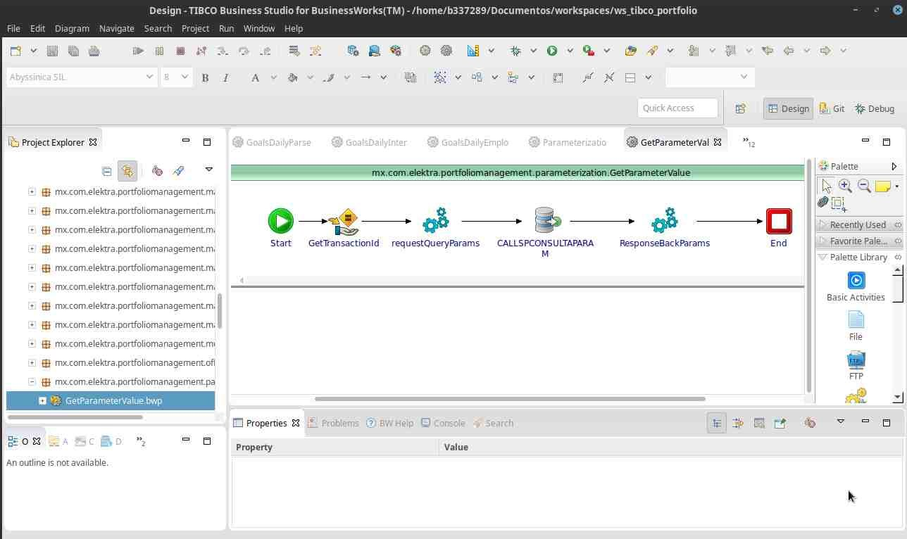
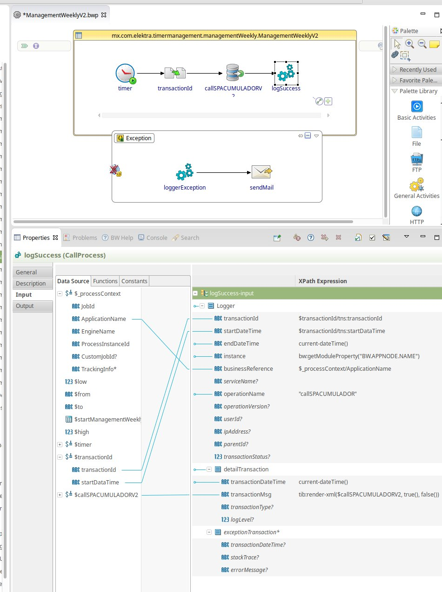

Juan Carlos Iglesias Ruiz
Analista / Desarrollador Java/plsql

Licenciado en Ingeniería en Informatica por el IPN, con 6 años de experiencia en desarrollo de tecnologas de la Información
Mi trabajo me ha permitido aprender diferentes lenguajes tanto por requerimientos urgentes, como por mantenimientos a sistemas legado como por gusto o retos personales y profecionales. Algunos conocimientos, que no se limitan a estos, pero son los que mas he usado, de los cuales son:
En conjuanto al equipo de Productos Financieros desarrollamos diferentes herramientas para la gestión de clientes de la cartera de Fenix Banco & Elektra, para promociones y recordatorios de cobro
html/css/js/java/jQuery/PLSQL/Tortoise SVN

Aunque es mi tecnología menos favorita no niego el potencial que tioene la herramienta Tibco de la cual apoyado en los especialestas, he realizado cargas masivas que's a base de datos en oracle
 Adicional he dirigido equipos de desarrollo.